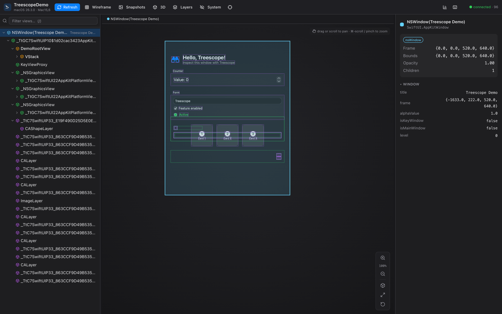
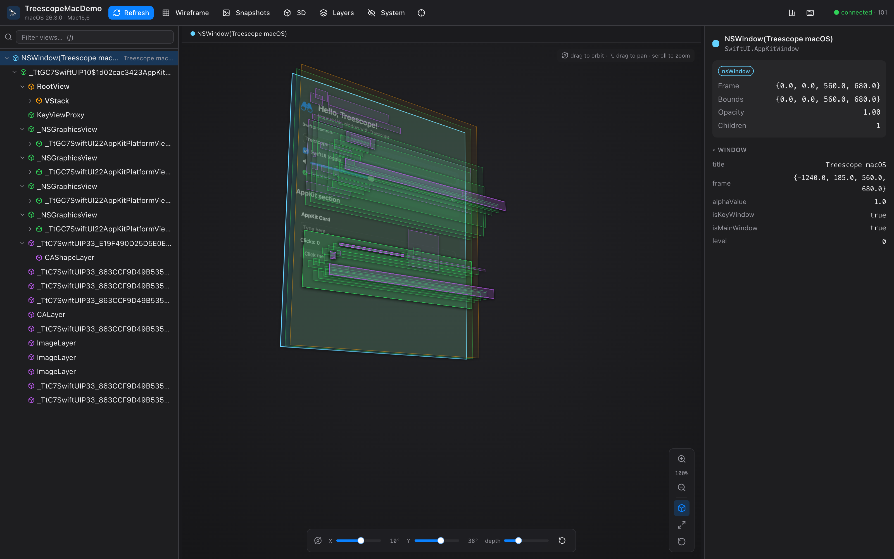

Put your view tree under the scope — SwiftUI included.
An open-source runtime view inspector for UIKit, AppKit and SwiftUI. Your app serves a browser viewer over loopback — browse the unified tree, inspect properties, see snapshots and an exploded 3D view, and edit live.
A free, open alternative to Lookin — with first-class SwiftUI inspection.

Everything you need to inspect a running app
Unified hierarchy tree
UIKit/AppKit views, SwiftUI nodes and CALayers in one tree, colour-coded by framework, with search, filtering and keyboard navigation.
Open SwiftUI inspection
Recovers the real declaration tree — VStack, Text content, modifiers, @State — using only public reflection.
Exploded 3D canvas
Wireframes + rendered snapshots, drag-to-orbit 3D with angle & depth controls, zoom/pan, and click-to-select synced with the tree.
Live editing
Change alpha, hidden, corner radius, colours, text and layer properties — on views and CALayers — and watch the app update.
Zero-install viewer
The app hosts the viewer itself over loopback HTTP + WebSocket. Open a URL in any browser — nothing to install, easy to share.
Debug-only, no deps
The embedded server is built on Network.framework + CryptoKit only — no third-party code enters your app, and it's excluded from Release.
CLI & coding-agent access
A treescope CLI inspects the hierarchy from your shell, and treescope mcp exposes it as MCP tools so coding agents can read the UI, find views and view snapshots.
See the layers, literally.
Toggle the exploded 3D view to fan the hierarchy out in depth. Drag to orbit, tune the X/Y angle and layer spacing, and the selected node stays in sync with the tree and inspector.
- ✓ Drag to orbit · ⌥-drag to pan · ⌘-scroll to zoom
- ✓ Per-axis angle sliders + depth control
- ✓ Rendered snapshots layered in 3D

Quick start
Three steps to inspect your running app.
-
1
Add the package (Debug only)
Add Treescope to your
Package.swiftdependencies:.package(url: "https://github.com/everettjf/treescope", from: "0.1.0") // target dependency: .product(name: "TreescopeServer", package: "treescope") -
2
Start the server early
Guard it for Debug builds so it never ships in Release:
import TreescopeServer #if DEBUG Treescope.start() // serves http://127.0.0.1:50067 #endif -
3
Open the viewer
Run your app (Simulator or Mac), then open the URL in any browser:
open http://127.0.0.1:50067The iOS Simulator shares the host network stack, so loopback reaches the app.
On a physical device? Forward over USB
The server listens on 127.0.0.1 only. On a real iPhone/iPad that loopback is the
device, not your Mac — so tunnel it over USB with iproxy
(from libimobiledevice):
brew install libimobiledevice
# with the device plugged in over USB and the app running:
iproxy 50067 50067 # Mac:50067 → device 127.0.0.1:50067
open http://127.0.0.1:50067 # inspect it from your Mac browser
iproxy tunnels through usbmuxd to the device's loopback, so no app changes
are needed. Leave it running for the session.
Try it in 30 seconds
Clone and run the bundled demo:
git clone https://github.com/everettjf/treescope
cd treescope
swift run TreescopeDemo # a sample app that embeds the server
open http://127.0.0.1:50067 # inspect itHow it works
Capture
A debug-only engine walks UIWindow/NSWindow → views → layers, and reflects SwiftUI by opening any View with Mirror.
Serve
A tiny loopback HTTP + WebSocket server streams the tree, snapshots and edits — built on Apple frameworks only.
Inspect
A React viewer renders the tree, 3D canvas and property inspector — in any browser, no install.
Read more in the README · contribute via CONTRIBUTING.md
Open source. Built from scratch.
MIT licensed. Built from scratch — no code copied from other inspectors. Contributions welcome.
Star Treescope on GitHub